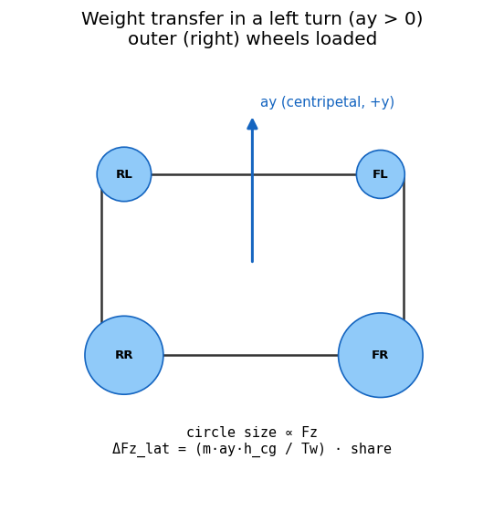
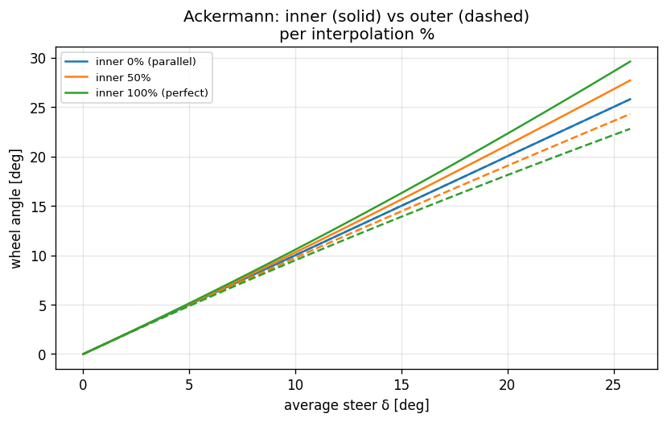

05. Ld2-SevenDOF (Per-Tire, 7 DOF)¶
Learning objectives¶
이 chapter 를 마치면 다음을 할 수 있다.
- Ld2 가 Ld1 위에 더하는 것 (per-tire Fz, lateral transfer, Ackermann, differential) 을 정확히 열거한다.
- lateral weight transfer 를 geometric(roll center) + elastic(roll-stiffness 분배) + unsprung 성분으로 분해해 유도한다. roll stiffness 는 corner spring 에서 유도되고 ARB·roll-center 만 입력임을 안다.
- Ackermann steering geometry 의 inner/outer wheel 각도 식을 유도하고 percent-interpolation 의 의미를 설명한다.
- Open / Locked / LSD differential 의 torque 분배 메커니즘과 split-mu 거동 차이를 설명한다.
- linear region 에서 Ld2 ↔ Ld1 이 일치하고 nonlinear 에서 갈라지는 이유를 설명한다.
Prerequisites¶
- Chapter 04 — single-track, longitudinal transfer, 1-step lag.
- Chapter 02 — body EoM, 3 종류의 \(a_x\).
- Chapter 03 — Pacejka \(F_x, F_y, M_z\).
5.1 동기 — Ld1 → Ld2¶
| 항목 | Ld1 | Ld2 |
|---|---|---|
| Wheel count | 2 (axle 평균) | 4 (per-tire) |
| Fz | axle static + long | per-tire static + long + lat transfer |
| Pacejka call | 2 | 4 |
| Wheel spin | 2 | 4 (independent) |
| Differential | 없음 | Open / Locked / LSD |
| Ackermann | 평균 δ | per-wheel \(\delta_{\text{inner}}/\delta_{\text{outer}}\) |
| Steering rack torque | 없음 | front Mz sum × ratio |
| Roll/pitch 진단 | 0 | quasi-static estimate |
Ld2 는 본격 차량 dynamics validation 의 entry level — ADAS 도메인의 표준 fidelity.

5.2 가정¶
| 가정 | 의미 | 깨지는 case |
|---|---|---|
| Quasi-static transfer | weight transfer 가 즉시 (suspension transient 없음) | chapter 06 (Ld3 dynamic roll) |
| 1-step lag \(a_y\) | lateral transfer 가 직전 step \(a_y\) 기반 | chapter 11 (iteration 옵션) |
| Symmetric LSD | drive/coast ramp 대칭 | 실차 LSD 비대칭 |
| Zero camber | roll 로부터 camber 없음 (\(\gamma=0\)) | chapter 06 |
| Rigid roll axis | geometric(roll center) + elastic(roll-stiffness 비율) + unsprung 으로 분배 | chapter 06 (compliance) |
| Planar body (no road attitude) | 노면 기울기는 force 로만, body 자세로는 X | chapter 06 (Ld3) |
노면 기울기와 ladder level (중요)¶
노면(grade/bank/지형)이 거동에 들어오는 통로는 level 마다 다르다:
- L1 (Bicycle): planar, slope 는 slope-gravity + \(F_z\propto\cos(\text{slope})\) 만. roll/pitch·하중이동 없음.
- L2 (7DOF): roll/pitch 자유도(state)는 없다 (transient 동특성 없음). 그러나 noise 기울기는 두 경로로 들어간다: (1) slope-gravity + \(\cos(\text{slope})\) 수직하중 스케일, (2) quasi-static 하중이동·roll/pitch 추정에 specific force \(a_\text{felt}=a_\text{kin}-g_\text{tangential}\) 를 사용. 일정 bank 직진처럼 \(a_y^\text{kin}\to0\) 이라도 타이어가 중력 횡성분을 받치는 \(a_y^\text{felt}=-g_{y,b}\) 가 남아 bank 에 의한 좌우 하중이동과 quasi-static roll 추정이 생긴다 (예: 8° bank → downhill 측 +660 N, roll≈0.76°). 단 이는 정상상태 대수해이며 차체 자세를 state 로 적분하지 않는다 — transient·실제 attitude state 는 L3 의 몫. 뷰어가 차를 노면에 기울여 그리는 것은 시각 표현이다.
- 자유 coasting incline 은 종방향 하중이동 0 (중력·관성이 CG 에서 상쇄, \(\cos\) 재분배만), 제동/등판 유지 시 종방향 이동 발생 — specific-force 정식화에서 자동.
- CG-migration (jacking): roll \(\phi\) 가 sprung CG 를 횡으로 \((h_{cg}-h_{ra})\sin\phi\) 이동시켜 추가 중력 roll moment 를 만든다 → 유효 roll stiffness 가 \(m_s g_\perp (h_{cg}-h_{ra})\) 만큼 감소 (\(M_\text{roll}\)·종방향 transfer 를 \(1/(1-\varepsilon)\) 로 증폭, \(\varepsilon=m_s g_\perp\,\text{arm}/K\)). pitch 도 동일. sedan flat 코너링 ~6-10%, 8° bank 에서 roll 0.76→0.81°, 횡 transfer 660→696 N. flat 직진은 불변.
- L3 (14DOF): 바퀴별
road_dz가 unsprung↔노면 tire spring 에 들어가 sprung body 의 roll/pitch 가 노면 평면을 자세로 따라간다 (chapter 06 §6.4). 단 grip \(F_z\) 는 아직 quasi-static (같은 chapter 한계 box).
5.3 Per-tire Fz — lateral + longitudinal transfer¶
Static per-tire:
Longitudinal transfer (axle 의 절반):
Lateral transfer — geometric + elastic + unsprung 분해:
(rear 도 \(a\leftrightarrow b\), \(f\leftrightarrow r\) 대칭). 여기서
핵심: axle roll stiffness \(K_\phi\) 는 corner spring 에서 유도되며 (\(spring \cdot arm^2\)), ARB 는 roll 전용 추가항이다 (입력은 ARB 와 roll-center height 만). \(h_u\) 는 unsprung CG 높이 (\(\approx\) wheel radius).
유도 — geometric vs elastic¶
lateral force 가 sprung mass 에 작용할 때 전달 경로는 둘로 갈린다. - Geometric (jacking): roll center 를 통해 suspension link 로 즉시 전달되는 성분. roll 을 일으키지 않고 \(F_{y,s}\,h_{rc}/T_w\) 만큼 직접 Fz 차이. - Elastic (roll): roll axis (front/rear roll center 를 잇는 선, CG 아래 높이 \(h_{ra}\)) 둘레의 roll moment \(M_{\text{roll}} = F_{y,s}(h_{cg}-h_{ra})\) 가 두 axle 의 roll spring 에 stiffness 비율 \(s_f\) 로 분배.
front 가 더 stiff (또는 front ARB↑) → front share↑ → front outer 가 더 loaded → understeer 경향. \(h_{rc}=0\) 이면 geometric=0, \(h_{ra}=0\) 으로 elastic-only (\(M_{\text{roll}}=m_s a_y h_{cg}\)) 이 되어 단순 모델로 환원된다.
roll-DOF 없는 L2 가 roll stiffness 를 쓰는 근거 (중요)¶
elastic 분배 \(s_f = K_{\phi,f}/(K_{\phi,f}+K_{\phi,r})\) 는 sprung mass 의 roll 이 front/rear roll spring 에 분배되는 roll 매개 효과다. L2 는 roll 자유도를 적분하지 않는데 이걸 쓰는 것이 모순처럼 보이지만, 다음으로 정당화된다:
- total transfer (front+rear 합) 은 순수 statics — roll 무관.
- front/rear 분배 는 정상상태에서 실제로 roll-stiffness 비율로 결정된다 (TLLTD, total lateral load transfer distribution — 측정 가능한 실물리량). 따라서 정상상태에서는 근사가 아니라 정확하다.
- L2 는 "roll 이 무한히 빠르게 정상상태로 settle 한다"는 quasi-static roll 가정(§5.2) 하에 그 정상상태 결과만 대수적으로 가져온다. roll 이 없다고 보는 게 아니라 transient 를 무시(즉시 settle)하는 것.
- transient 한계: turn-in 같은 빠른 과도에서 실제 elastic transfer 는 roll 시상수만큼 지연되며 쌓이는데 L2 는 lag 없이 즉시 full split 을 건다 → 과도 구간에서 약간 aggressive. 이 lag 는 roll 을 상태로 갖는 chapter 06 (Ld3) 가 메운다.
- "순수 2D" 를 원하면 분배를 정적하중 \(b/L, a/L\) 로 바꿀 수 있으나, ARB·spring 의 front/rear balance 튜닝(understeer 의 #1 손잡이)이 L2 에서 무력화된다. 본 시리즈는 balance tunability 를 위해 roll-stiffness 분배(TLLTD)를 채택한다.
부호 직관: \(a_y > 0\) (좌선회, centripetal \(+y\)) → 차체가 \(-y\) 쪽으로 기울고 → right side (FR, RR) loaded → \(F_{z,FR} > F_{z,FL}\).
\(a_y\) 의 정확한 정의¶
lateral acceleration 은 \(a_y = \dot v_y + v_x r = F_y/m\) 이지 frame 도함수 \(\dot v_y\) 가 아니다 (chapter 02 §2.7). 이를 혼동하면 lateral transfer 가 두 자릿수 N 으로 비현실적으로 작아진다. 정량 사례는 §5.13 box.
5.4 Per-wheel velocity / slip¶
각 wheel 의 body-frame velocity:
wheel 의 body-frame 위치 \((r_{x,i}, r_{y,i})\):
- FL: \((+a, +T_{w,f}/2)\)
- FR: \((+a, -T_{w,f}/2)\)
- RL: \((-b, +T_{w,r}/2)\)
- RR: \((-b, -T_{w,r}/2)\)
(ISO 8855 RH: \(+y\) = leftward → left wheels \(+y\), right wheels \(-y\).)
front wheels 는 추가로 steer \(\delta_i\) (Ackermann 시 wheel 마다 다름) 회전:
rear: wheel frame = body frame. 이것이 chapter 03 Pacejka input (\(\alpha, \kappa\)) 의 source.

5.5 Ackermann steering geometry¶
문제¶
low-speed cornering 에서 inner/outer wheel 의 path radius 가 다르다. parallel steer (양 wheel 동일 \(\delta\)) 면 inner wheel 이 의도 path 보다 큰 radius 를 그리려 해 불필요한 slip 발생.
Perfect Ackermann¶
instantaneous center of rotation (ICR) 이 rear axle 연장선과 front steering plane 의 교점. 양 front wheel 의 angle 이 그 ICR 로 align:
\(\delta_{\text{inner}} > \delta_{\text{outer}}\) (inner 가 더 꺾임).
Percent-interpolation¶
- \(0\) → parallel steer (Ld1 호환).
- \(100\) → perfect Ackermann.
차종 default: sedan 60 %, sports 85 %, FSK formula 100 %, race 90 %.
5.6 Differential model¶
Open¶
split-mu 면 low-mu side 가 spin up, 차량 traction = lower-mu side 한계.
Locked (spool)¶
좌우 \(\omega\) 동등화 (실제는 algebraic constraint/DAE). smooth approximation:
\(\Delta\omega>0\) (L faster) → bias\(>0\) → R 가 더 받음 (slower wheel gets more torque). 0.45 cap 으로 발산 방지.
LSD¶
preload + ramp:
sedan default preload 0.10, ramp 0.20. 실차 ramp angle (drive/coast 비대칭) 보다 단순화된 대칭 모델.
split-mu accel 에서 종단 \(\Delta\omega\) ordering: Open > LSD > Locked (정성 정확). 정량은 §5.13 box.
5.7 Steering rack torque¶
좌선회 (\(\delta>0\)) 에서 \(M_z>0\) (self-aligning) → rack torque\(>0\) → 운전자가 놓으면 centering. DriverModel force-feedback 통합용.
5.8 Body force / moment + EoM¶
per-wheel spin EoM:
5.9 검증 전략¶
| 검증 | 케이스 |
|---|---|
| Static Fz | at-rest sum \(= mg\), per-axle 정확 |
| Hard brake | \(F_{z,f} > 1.05\,F_{z,f}^{\text{static}}\) |
| Left turn | \(F_{z,FR} > F_{z,FL}\), \(F_{z,RR} > F_{z,RL}\) |
| Ld1↔Ld2 linear | $v_x\le 15, |
| Differential ordering | split-mu \(\Delta\omega\): Open > LSD > Locked |
| Ackermann | tight turn 에서 percent \(0\to100\) 시 SS yaw rate 증가 |
linear region 에서 Ld2≈Ld1, nonlinear (\(v_x=20,\delta=0.10\)) 에서 outer-tire saturation 으로 최대 ~89 % 차이 — Ld2 의 가치는 nonlinear region 에 있다.
5.10 한계¶
| 항목 | 한계 | 다루는 chapter |
|---|---|---|
| Suspension dynamics | quasi-static (transient 없음) | chapter 06 |
| Roll/pitch dynamic response | 1-step estimate 만 | chapter 06 |
| Wheel hop / unsprung 진동 | 없음 | chapter 06 |
| Anti-dive / anti-squat | 없음 | chapter 06 |
| Camber from roll | \(\gamma=0\) | chapter 06 |
5.11 다음 chapter 와의 연결¶
Ld2 는 weight transfer 를 quasi-static 으로 처리한다. chapter 06 (Ld3, 14-DOF) 는 sprung/unsprung mass 를 분리하여 suspension 의 dynamic response (roll/pitch transient, wheel hop, camber) 를 추가한다.
5.12 참고문헌¶
- Genta, G. Motor Vehicle Dynamics, §6 per-tire and weight transfer.
- Milliken & Milliken, Race Car Vehicle Dynamics, §6 weight transfer, §15 Ackermann/diff.
- Reimpell, J. The Automotive Chassis, §3 steering geometry.
5.13 Self-check¶
1. front roll stiffness 를 키우면 understeer/oversteer 중 어느 쪽?
understeer. front share $s_f$ 증가 → front lateral transfer 증가 → front outer tire 과대 loading → tire saturation 으로 front cornering 능력 저하 → understeer.2. ay_prev 를 v̇y 로 두면 무슨 일이 생기나?
$a_y = \dot v_y + v_x r$ 인데 $\dot v_y$ 만 쓰면 $v_x r$ centripetal 항이
빠져 lateral transfer 가 수십 N 으로 비현실적으로 작아진다. $a_y = F_y/m$ 로
써야 한다.
3. split-mu 에서 Open diff 가 Locked 보다 traction 이 나쁜 이유?
Open 은 좌우 torque 동일 → low-mu wheel 이 먼저 spin up 하고 high-mu wheel 도 같은 (낮은) torque 만 받음. Locked 는 slower(high-mu) wheel 로 torque 를 몰아줘 traction 확보.4. parallel steer (0 % Ackermann) 의 low-speed 문제는?
inner wheel 의 필요 steer 각이 outer 보다 큰데 둘이 같으면 inner 가 의도보다 큰 radius 를 그리려 해 slip/타이어 마모 발생. tight/low-speed turn 에서 두드러짐.5. Ld2 가 Ld1 대비 의미를 갖는 영역은?
nonlinear region. linear 에서는 lateral transfer 효과가 작아 SS yaw rate 가 거의 동일 (≤0.5 %). 고 $a_y$ 에서 outer-tire saturation 이 본격화되며 갈라진다.5.14 VDSim 구현 노트¶
[VDSim impl] § 5.3 — Lateral transfer 코드
core/src/seven_dof_dynamics.cpp:158-176:const double Kf = axle_roll_stiffness(vp_, 0); // (k_l+k_r)*(tw/2)^2 + ARB const double Kr = axle_roll_stiffness(vp_, 1); const double h_ra = hrc_f * (b/L) + hrc_r * (a/L); const double Fys = vp_.mass_sprung * ay_prev_; const double Mroll = Fys * (h_cg - h_ra); const double dFz_lat_f = (Tw_f > 1e-3) ? (Fys*(b/L)*hrc_f + Mroll*(Kf/(Kf+Kr)) + m_uf*ay_prev_*R) / Tw_f : 0.0; Fz[WHEEL_FL] = Fz_static_f - dFz_long_half - dFz_lat_f; Fz[WHEEL_FR] = Fz_static_f - dFz_long_half + dFz_lat_f;3-성분(geometric+elastic+unsprung).
+dFz_lat_f가 FR 에 더해져 좌선회 시 \(F_{z,FR}>F_{z,FL}\) 부호 정확. roll stiffness 는 spring 에서 유도되며 ARB·roll-center 만 입력.[VDSim impl] § 5.3 — ay 정의 버그 history
초기 구현이
ay_prev = k.dvy(frame 도함수). 격자 sweep 에서 lateral transfer 가 37 N 으로 비현실적 (예상 ~2000 N).ay_prev = Fy_total/m로 수정 후 3693 N 으로 수렴. chapter 02 §2.7 "3 종류 ax" 의 실전 사례.core/src/seven_dof_dynamics.cpp:353-354의ax_body/ay_body가 명시적으로Fx/m, Fy/m.[VDSim impl] § 5.5 — Ackermann 코드
core/src/seven_dof_dynamics.cpp:212-228. 좌선회 (\(\delta>0\)) 시 inside=FL, outside=FR. 검증: tight turn (\(R=20, v_x=2, \delta=0.35\)) 에서 percent \(0\to100\) 시 SS yaw rate +37 %.[VDSim impl] § 5.6 — Differential 검증
split-mu accel 종단 \(\Delta\omega\): Open 0.605, LSD 0.353, Locked 0.207 rad/s. 정성 ordering 일치.
[VDSim impl] § 5.7 — Rack torque 코드
core/src/seven_dof_dynamics.cpp:114-117:[VDSim impl] § 5.9 — 검증 test
SevenDOF.*18 tests:ConstructionAndLevel,AtRestStaticFz,HardBrakeLoadsBothFrontWheels,LeftTurnLoadsRightWheels,SmallSteerYawRateMatchesBicycle,AeroDownforceIncreasesFzAtSpeed,OpenDifferentialSplitMu,LockedDifferentialReducesSpread,LSDBetweenOpenAndLocked,AckermanInfluencesTurningRadius,AckermanZeroReproducesBaseline,RollAngleSignAndScale,PitchAngleSignDuringBrake,SteeringRackTorqueSignOpposesSteer,IndependentWheelSpinUnderSplitMu외. 전 18 pass.